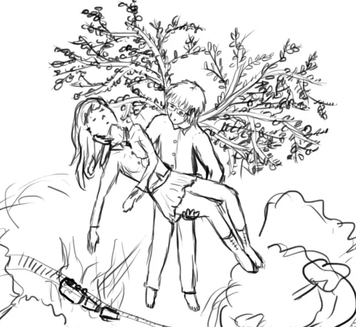

2016
Mai
Avril
- 25 — Réflexions sur Samare 5/5
- 21 — Réflexions sur Samare 4/5 - Les personnages secondaires (suite)
- 17 — Réflexions sur Samare 3/5 - Les personnages secondaires
- 17 — Interrogations en vrac sur Samare
- 11 —  Réflexions sur Samare 2/5 - Les personnages principaux
- 10 — Réflexions sur Samare 1/5
-
09 —
 Flocons d’amour de Maureen Johnson, John Green et Lauren Myracle
Flocons d’amour de Maureen Johnson, John Green et Lauren Myracle
- 02 — Vous revoir de Marc Levy
Mars
- 25 — Et si c’était vrai… de Marc Levy
-
20 —
Mes dernières lectures


 Charlie et la chocolaterie (Roald Dahl), Le charme des après-midi sans fin (Dany Laferrière), Narnia - Le neveu du magicien (C.S. Lewis), Chroniques des années noires (Kim Stanley Robinson), ♡ Le ver à soie (Robert Galbraith), ♡ Le visiteur du futur - La Meute (Slimane-Baptiste Berhoun et François Descraques)
Charlie et la chocolaterie (Roald Dahl), Le charme des après-midi sans fin (Dany Laferrière), Narnia - Le neveu du magicien (C.S. Lewis), Chroniques des années noires (Kim Stanley Robinson), ♡ Le ver à soie (Robert Galbraith), ♡ Le visiteur du futur - La Meute (Slimane-Baptiste Berhoun et François Descraques) -
13 —
 La réécriture de mon roman ou comment passer son temps à réinventer sa propre histoire ?
La réécriture de mon roman ou comment passer son temps à réinventer sa propre histoire ?
2015
Décembre
- 12 — Les concours d’écriture
Novembre
Octobre
- 21 — Artemis Fowl d’Eoin Colfer
- 20 — Le narrateur c’est tabou…
- 13 — Un endroit où écrire
- 12 — Show, don’t tell !
-
11 —
 💖 Abyss d’Orson Scott Card
💖 Abyss d’Orson Scott Card